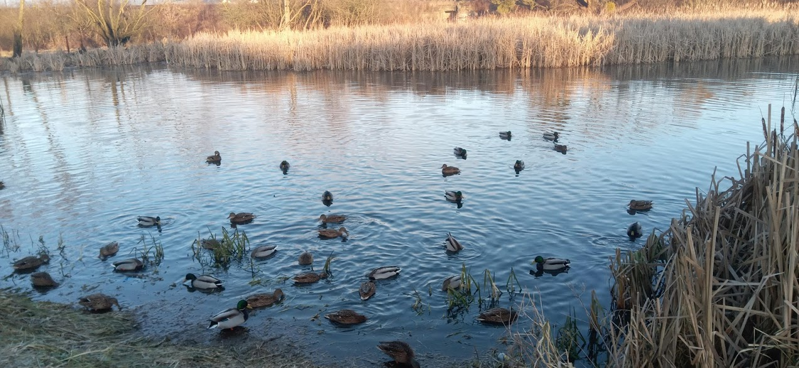

Качки живуть тут

Всім привіт! Представляємо 40 диких качок, що мешкають на ставку в Рясне.
Кожного року качки відлітають у теплі краї, однак цього року вони вирішили залишитись з нами.
Кожного дня їх відвідують і підгодовують місцеві мешканці. Нам небайдуже здоров’я качок, тому хочемо висловити побажання щодо харчування, яким їх пригощають.
Бажано не годувати качок хлібом, тому що він не дає їм необхідних вітамінів і мінералів.
Найкраща їжа для качок це капуста, морква, вівсяні пластівці, нежирний сир, шкаралупа яєць.
Крім ставка в Рясне, у Львові є ще декілька місць, де зимують дикі качки:
У Стрийському парку качок заборонено годувати, але можна подивитись та пофотографувати;
В парку Піскові озера (відомі як Алтайські), багато качок, яких можна годувати;
На озері на Знесінні також можна побачити та погодувати диких качок.
Якщо ви знаєте інші місця, де мешкають дикі качки, просимо нас повідомити. Ми додамо їх на сайт і більше людей про це дізнаються.
Контактна форма